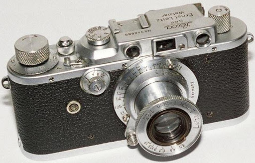
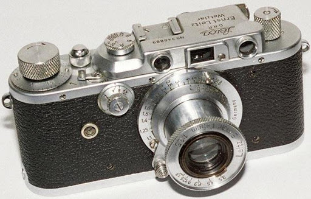

История фотографии
История возникновения фотографии начинается с конца 18 века. Изобретателем фотографии является Жозеф Нисефор Ньепс. Он принял решение, добиться автоматического создания изображений на бумаге с помощью *камеры-обскуры. Для получения черно-белых изображений использовалась бумага, пропитанная сирийским асфальтом. Проблема такого фотографирования заключалась в том, что Людей фотографировать было невозможно. Со смертью Ньепса история развития фотографии не прекратилась. Но история фотографии на этом не закончилась. Дело Ньепса продолжил Луи Жак Дагер. Он использовал для создания фотографий медные пластинки с серебристым слоем, обмазанные йодом. В 1835 Дагер обнаружил, что картинка быстрее проявляется под воздействием паров ртути. В дальнейшем процесс создания фотографий постепенно совершенствовался. В 1850-ых годах была изобретена стереоскопическая дагеротипия. При помощи отдельных луп или бинокля каждый глаз человека смотрел на одну фотографию. В результате изображение казалось объемным. Но в процессе создания фотографии остался большой недостаток. Это невозможность копирования фотографий. Позже, благодаря Уильяму Генри Фоксу Тальботу фотографию стало возможно переносить с одного носителя на другой. При этом цвета менялись, в результате получалось черно-белое изображение. Первая фотокамера в привычном нам виде появилась в 20 веке. Снимок делался при помощи фотоаппарата. Внутрь устройства вставлялась фотопленка. После проявки можно было перенести снимки на фотобумагу. В 1980 году поручик Измайлов снабдил фотоаппарат системой магазинного ружья. Это позволило быстро менять фотопластинки. Всего в магазин помещались 70 пластинок. Эволюция создании фотографии дошла до того, что в нынешнее время в каждом смартфоне есть встроенная фотокамера.
*Камера-обскура – это приспособление, с помощью которого художники 18 века рисовали экспозиции.
 

Сергей Львович Левицкий
Семья Романовых оставила потомкам богатейшее фотографическое наследие. Императорскую семью снимали лучшие фотографы Российской империи. В заграничных поездках Романовы непременно заказывали фотопортреты у известных иностранных мастеров. В семье же Николая II все были увлечены фото.
В фотографическом наследии Романовых особенно много снимков связано с семьей Николая II. Императорскую семью портретировало много известных фотографов. В том числе фотограф Сергей Львович Левицкий.
Сергей Львович Левицкий родился в Москве в 1819 году и по настоянию родителей окончил в 1839 году юридический факультет университета, хотя больше интересовался естественными науками. По окончании университета он стал чиновником министерства внутренних дел в Петербурге.
В 1843 году по делам службы Левицкий едет на Кавказ. Там он снимает ландшафтные пейзажи, отбирает несколько лучших и отправляет в Париж. На выставке его работы получают медаль — первую в мировой истории медаль, присужденную за фотографию. После этого в 1844 он бросает службу и целиком посвящает себя фотографии...
В 1845 году Левицкий отправляется в Европу с целью детально изучить премудрости фотографии. В 1850 году Сергей Львович возвращается в Петербург и 22 октября того же года открывает мастерскую под названием «Светопись».
Алексея Тимофеевича Саладина
Общая информация
Алексей Тимофеевич родился 19 мая 1876 в Москве. Учительствовал в одном из подмосковных сел, но из-за участия в политических дискуссиях лишился места. Живя на станции Люберцы, Алексей Тимофеевич поступает в Управление Московско-Казанской железной дороги на должность делопроизводителя. После возвращения из ссылки (за участие в событиях 1905 года) Саладин поселился с семьей в селе Раменское, где работал мелким чиновником на железнодорожной станции. Всё свободное время Саладин посвятил изучению Подмосковья и в частности Бронницкого уезда.
Бурное развитие железнодорожного транспорта способствовало быстрому освоению дачной местности вблизи Москвы. Образцом краеведческой литературы можно считать его "Путеводитель по пригородным и дачным местностям до станции Раменское Московско-Казанской железной дороги". Саладин создал маленькую студию «Саладин и К», которая специализировалась на фотографировании и распространении снимков с видами Москвы и ее окрестностей. Саладин обладал редкой скромностью, публиковал свои альбомы, путеводители совершенно бесплатно.
Алексей Тимофеевич страшно нуждался, голодал, болел туберкулёзом. В 1919 году он тихо скончался у себя дома в Раменском. Алексей Тимофеевич Саладин похоронен на старом Раменском кладбище. Могила краеведа до наших дней не сохранилась.
Конка

Конка на северной стороне была построена в 1899 году землевладельцем Алексеем Дорофеевичем Соколовым, по согласованию с Правлением МКЖД. Конка, уникальная в масштабах дачного посёлка, функционировала для удобства дачников и просуществовала до начала 1920-х.